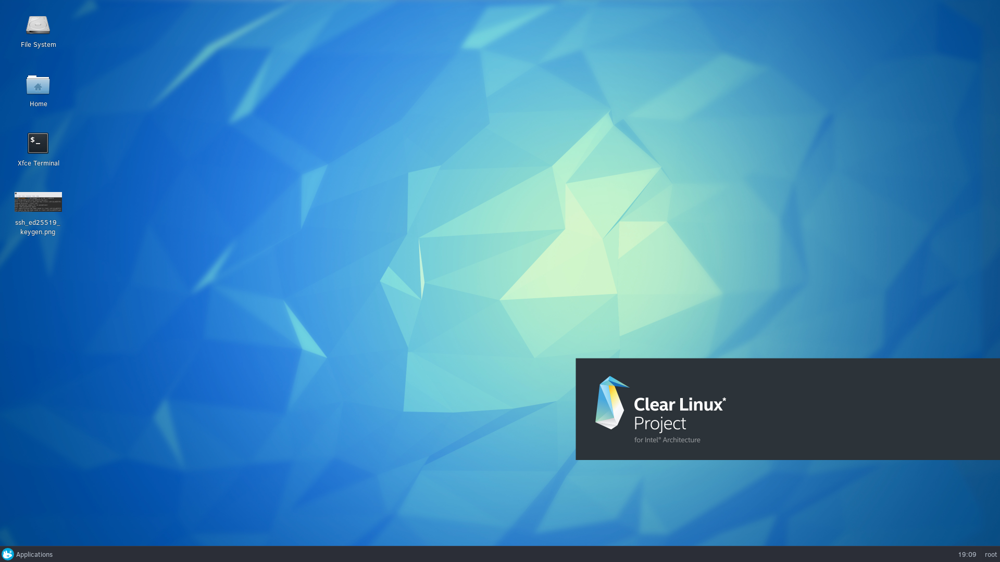

Contents
Custom Web Application Development
For something as trivial as a Wordpress install, you know you can use a tool like Docker Wordpress, to integrate easily enough with Intel Clear Containers. But what if your goal is to build a custom web application?
Let’s say your aspirations are fairly modest. You have an idea for an application. This is an idea that, if successful, you’d likely want to scale up to a cloud-based model at some point in the future. For now, however, your goal is simply to build and test without the abstract “container” environment; it’s just not necessary. For development, you prefer to build and test within the actual environment that exists (or will exist) on your host.
This tutorial walks through a basic development box setup.
Initial Machine Configuration
After a successful bare metal install on something like a NUC, you’re prompted to reboot, log in as root, and change your password right away.
Install the following bundle:
# swupd bundle-add os-utils-guiLaunch the GUI and see the very basic (but still lovely) desktop:
# startxLaunch a terminal and generate SSH keys. ED25519 is new; it has been designed to replace soon-to-be-deprecated DSA and RSA. ED25519 is a reference implementation of EdDSA with Twisted Edwards curve:
# ssh-keygen -o -a 100 -t ed25519
Copy your public key,
id_ed25519.pubto any centralized repos where you’re storing or backing up your development code (gerrit, github, bitbucket). If you need to copy the key to a remote machine, try something like:# scp ~/.ssh/id_25519.pub user@ip-addr-of-remote-machine:~
{kind=link}
Web Application Development Tools
Now we’re ready to install the bundles that will give us the tools we need to do run web applications locally
# swupd bundle-add database-basic editors-dev web-server-basic
ruby-basic
Sublime Text
Add a text editor IDE of your choosing; for example, Sublime:
# mkdir /opt/ # cd /opt/ # curl -O https://download.sublimetext.com/sublime_text_3_build_3126_x64.tar.bz2 # tar -xjvf sublime_text_3_build_xxxx_x64.tar.bz2 # touch /usr/bin/sublime # nano /usr/bin/sublime
Put the following script in
usr/bin/sublime#!/bin/sh export SUBLIME_HOME="/opt/sublime_text_3" $SUBLIME_HOME/sublime_text $*
Make the file executable:
# chmod +x /usr/bin/sublime
Bundles
Add the bundles:
# swupd bundle-add database-basic editors-dev web-server-basic ruby-basic